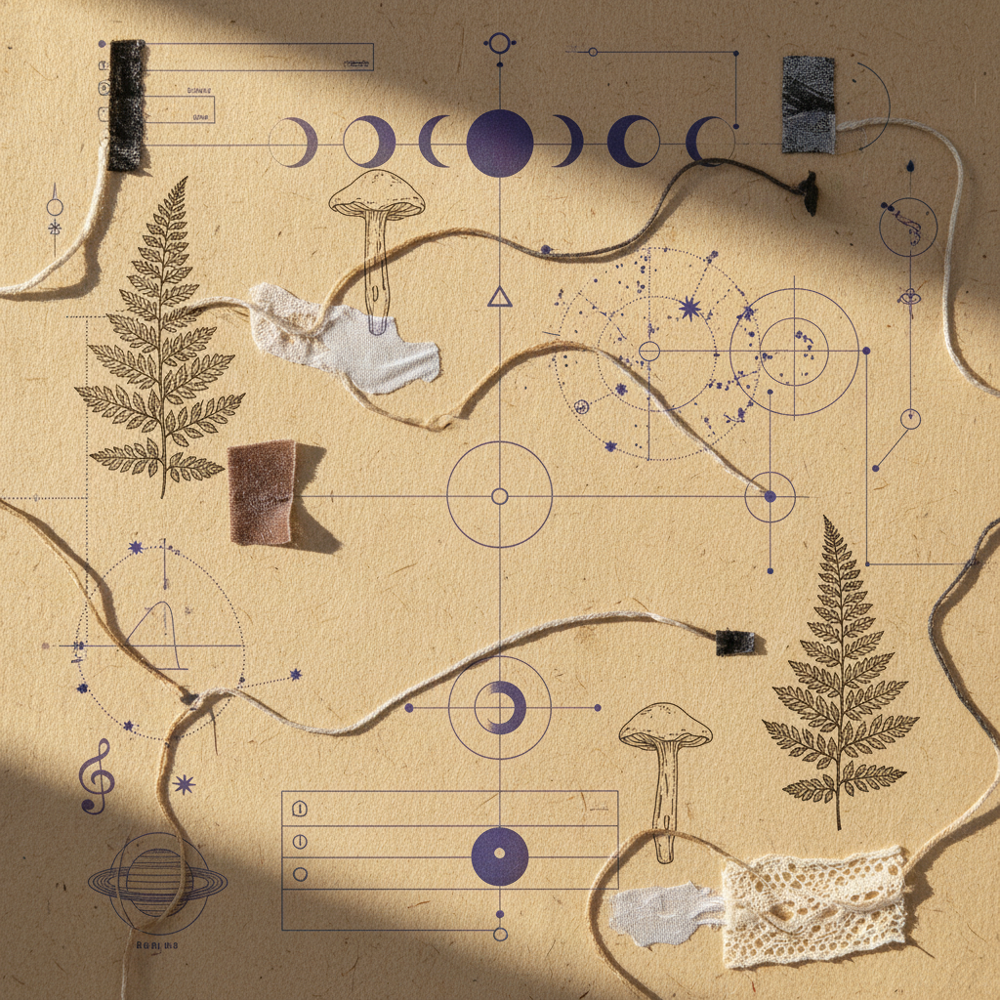

Design Workbook #03
Root to Vision.
A sequential inquiry into the transition from the grounded soil of Taurus to the expansive philosophical horizons of Sagittarius.

Cycle: Taurus New Moon to Sagittarius Full Moon
Phase: Integration Alpha
Archetype: The Practical Visionary
1. Lunar Context
"The seed planted in the heavy loam of Taurus must eventually seek the fire of the stars."
Taurus New Moon
The cycle begins with somatic presence. We audit our foundations—the physical structures, the financial roots, and the sensory realities that sustain the work.
Sagittarius Full Moon
Illumination arrives as expanded perspective. What was built in the soil now informs a wider philosophical lens. The local becomes universal.
2. Somatic Attunements (Earth to Fire)
Grounding
Focus on the weighted points of contact. Heel, sit-bone, palm. Breathe into the density of the present moment.
Extension
Moving from the core outward. Stretching the limbs toward the periphery. Creating space for the breath to travel.
Elevation
A focus on the crown and the upward gaze. Transmuting physical stability into mental clarity and visionary intent.
3. 14-Day Integration Protocol
4. Research Prompt
Stability to Philosophical Expansion
Inquire: How does your current level of physical and financial security limit or enable your capacity for speculative thought?
"The bird cannot migrate if the nest is on fire, but neither can it fly if it remains forever tethered to the branch."